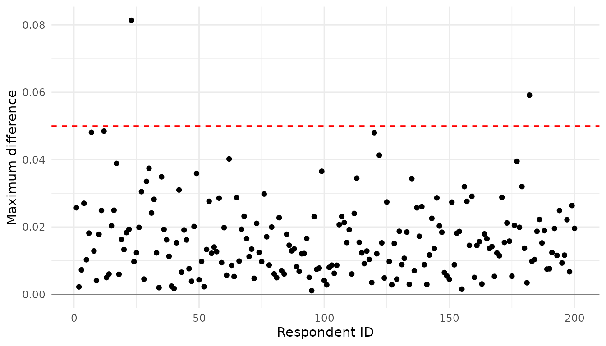
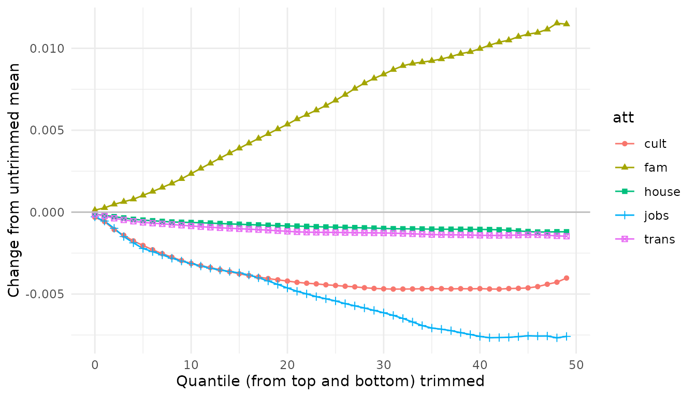
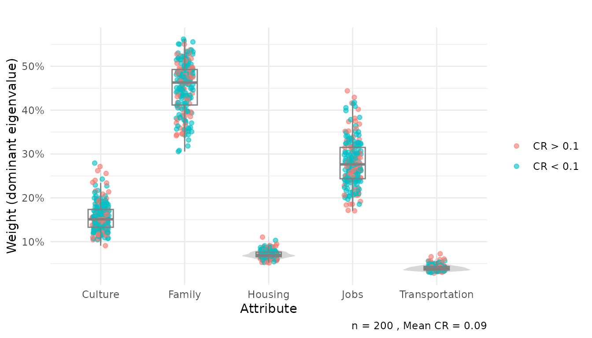
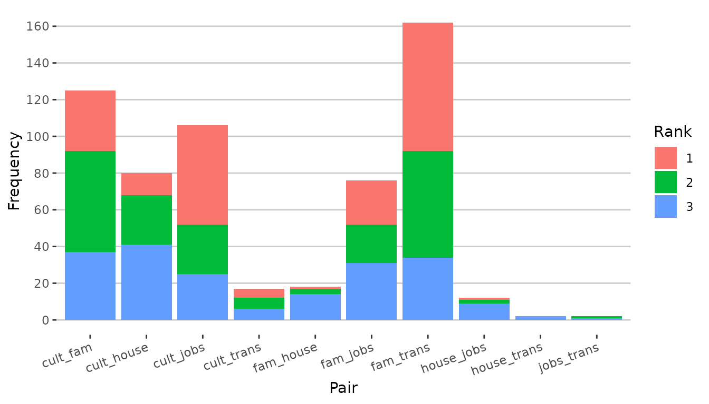
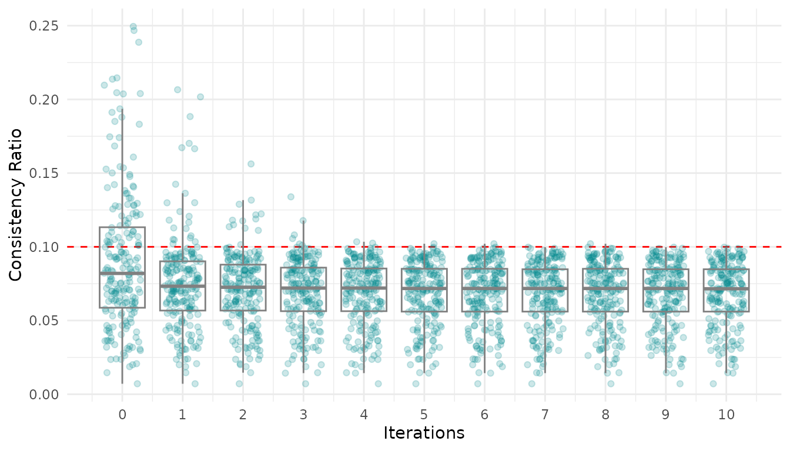
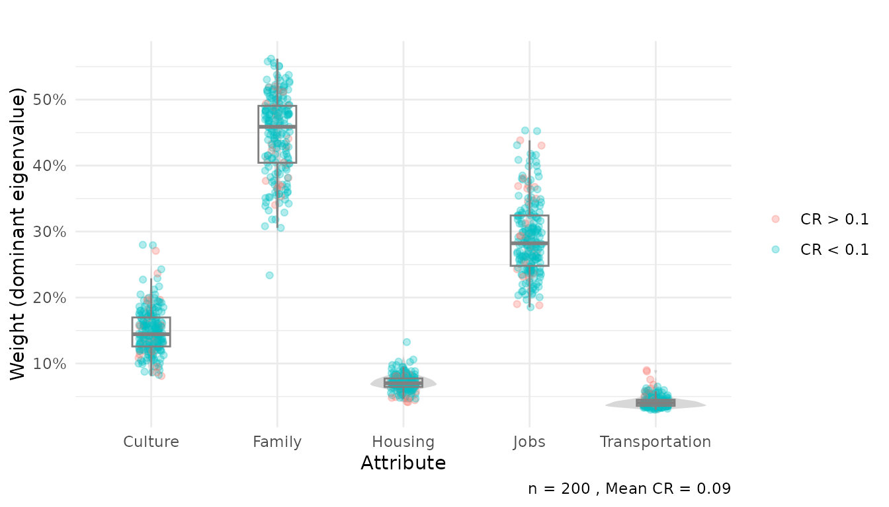

Analytic Hierarchy Process for Survey Data in `R`
Vignettes for the
ahpsurvey package (ver 0.4.0)
Frankie Cho
f.cho@exeter.ac.uk16 July 2026
Source:vignettes/my-vignette.Rmd
my-vignette.RmdIntroduction
The Analytic Hierarchy Process (AHP), introduced by Saaty (1987), is a versatile multi-criteria
decision-making tool that allows individuals to rationally weigh
attributes and evaluate alternatives presented to them. While most
applications of the AHP are focused on implementation at the individual
or small-scale, the AHP was increasingly adopted in survey designs,
which involve a large number of decision-makers and a great deal of
heterogeneity in responses. The tools currently available in
R for the analysis of AHP data, such as the packages
ahp by Glur (2018) and
Prize by Dargahi (2016), are
excellent tools for performing the AHP at a small scale and offers are
excellent in terms of interactivity, user-friendliness, and for
comparing alternatives.
However, researchers looking to adopt the AHP in the analysis of survey data often have to manually reformat their data, sometimes even involving dragging and copying across Excel spreadsheets, which is painstaking and prone to human error. Hitherto, there are no good ways of computing and visualising the heterogeneity amongst AHP decision-makers, which is common in survey data. Inconsistent choices are also prevalent in AHP conducted in the survey format, where it is impractical for enumerators to identify and correct for inconsistent responses on the spot when the surveys are delivered in paper format. Even if an electronic version that allows immediate feedback of consistency ratio is used, respondents asked to repeatedly change their answers are likely to be mentally fatigued. Censoring observations with inconsistency is likely to result in a greatly decreased statistical power of the sample, or may lead to unrepresentative samples and nonresponse bias.
The ahpsurvey package provides a workflow for
researchers to quantify and visualise inconsistent pairwise comparisons
that aids researchers in improving the AHP design and adopting
appropriate analytical methods for the AHP.
Install the package directly from CRAN:
install.packages("ahpsurvey")And load the ahpsurvey library.
If you are familiar with the AHP and want a rapid way of processing your data, skip to the part about the canned routine towards the end.
The Saaty AHP and the toy dataset
A gentle introduction of the AHP survey methodology:
| Rating | Definition |
|---|---|
| 1 | Two characteristics are equally important |
| 2 | Between 1 and 3 |
| 3 | The preferred characteristics are slightly more important |
| 4 | Between 3 and 5 |
| 5 | The preferred characteristics are moderately more important |
| 6 | Between 5 and 7 |
| 7 | The preferred characteristics are strongly more important |
| 8 | Between 7 and 9 |
| 9 | The preferred characteristics are absolutely more important |
A Saaty scale is composed of 9 items on each end (17 options per pairwise comparison) where decision-makers are asked to indicate how much attribute/ characteristic A is more preferred to B (or vice versa), and how much it is preferred in a 9-point scale. Respondents are asked to make pairwise comparisons for a range of attributes, and indicate their priorities for each of them.
Afterwards, we load the data needed, city200, which
consists of randomly generated data of 200 individuals based on the
weights provided in Saaty (2004). The
methodology of data generation is explained at the end of this
vignette.
## cult_fam cult_house cult_jobs cult_trans fam_house fam_jobs fam_trans
## 1 2 -2 2 -6 -4 -4 -8
## 2 2 -4 1 -4 -4 -2 -8
## 3 4 -2 1 -3 -7 -3 -5
## 4 8 -4 3 -4 -8 1 -7
## 5 3 -3 5 -6 -8 1 -4
## 6 6 -4 2 -4 -7 -2 -4
## house_jobs house_trans jobs_trans
## 1 4 -3 -8
## 2 4 -3 -7
## 3 4 -3 -6
## 4 4 -3 -9
## 5 4 -3 -6
## 6 4 -3 -6The simulated dataset consists of ten pairwise comparisons of five attributes, which are “culture”, “family”, “housing”, “jobs” and “transportation.” An individual compares the attributes in a pairwise fashion; if culture is more important than house by 2 units on the Saaty scale, the dataset will code it as -2. This is important to bear in mind as we move on.
Individual and Aggregated priorities
Creating pairwise comparison matrices
Based on the Saaty scale, a pairwise comparison matrix of attributes for the individual is obtained:
Where represents the pairwise comparison between the attribute and . If is more important than for 6 units, and , i.e. the reciprocal. Data must be reformatted into this pairwise comparison matrix format to proceed.
The reformatting of the survey data (with one row per individual)
into such a matrix necessary for further analysis is cumbersome for
researchers. Furthermore, as researchers conducting the AHP as an
integrated part of a survey, we typically receive data in the above
format: the pairwise comparisons are coded in positive and negative
numbers as opposed to reciprocals. In the pairwise comparison of
cult_fam:
In the case where the decision-maker chose 6, the sensible codebook
maker would code it as -6, which denotes that Culture is more
important than Family in 6 units for that decision-maker. For
ahp.mat to work, the value in A_B variable have to be the
importance A has over B in positive values. In this case, the values
should be converted from negative to positive, and the negative values
would be converted to its reciprocal in the pairwise matrix. When data
is coded in the above way, set negconvert = TRUE. If the
data is already coded in the reciprocal (as opposed to negatives), set
reciprocal = FALSE.
Some caveats prior to entering the data into the ahp.mat
function. ahp.mat does not recognise the names of the
original dataframe, and figures out which attribute corresponds to which
entirely based on the order of the columns. For example, when the
attributes are A, B, C and D, the dataframe should be ordered in
A_B, A_C, A_D, B_C, B_D, C_D, and the attributes listed as
c(A,B,C,D), in that order.
ahp.mat takes four arguments:
df: the dataframeatts: a list of attributes in the correct ordernegconvert: whether to convert all positive values to negative (logical, defaults toFALSE)reciprocal: whether to convert negative values (afternegconvert) to its reciprocals (defaults toTRUE).
## [[1]]
## cult fam house jobs trans
## cult 1.000 0.500 2.000 0.500 6
## fam 2.000 1.000 4.000 4.000 8
## house 0.500 0.250 1.000 0.250 3
## jobs 2.000 0.250 4.000 1.000 8
## trans 0.167 0.125 0.333 0.125 1
##
## [[2]]
## cult fam house jobs trans
## cult 1.00 0.500 4.000 1.000 4
## fam 2.00 1.000 4.000 2.000 8
## house 0.25 0.250 1.000 0.250 3
## jobs 1.00 0.500 4.000 1.000 7
## trans 0.25 0.125 0.333 0.143 1
##
## [[3]]
## cult fam house jobs trans
## cult 1.000 0.250 2.000 1.000 3
## fam 4.000 1.000 7.000 3.000 5
## house 0.500 0.143 1.000 0.250 3
## jobs 1.000 0.333 4.000 1.000 6
## trans 0.333 0.200 0.333 0.167 1The ahp.mat function creates a list of pairwise comparison matrices for all decision-makers. As seen above, the pairwise matrices resembles the original Saaty criteria weights, which is a good sanity check.
Individual preference weights
The ahp.indpref function computes the individual
priorities of the decision-makers, and returns a data.frame
containing the preference weights of the decision-makers. The three
arguments are as follows:
ahpmat: The list of matrices created byahp.mat.atts: a list of attributes in the correct order.-
method: It normalises the matrices so that all of the columns add up to 1, and then computes the averages of the row as the preference weights of each attribute. Four modes of finding the averages are available:-
arithmetic: the arithmetic mean -
geometric: the geometric mean -
rootmean: the square root of the sum of the squared value -
eigen: the individual preference weights are computed using the Dominant Eigenvalues method described in Saaty (2003)
-
Here I demonstrate the difference of using arithmetic aggregation and dominant eigenvalue methods. In my own testing with real datasets, a much higher proportion of respondents have at least one attribute with a difference larger than 0.05 due to presence of inconsistent and heterogeneous responses.
cityahp <- city200 %>%
ahp.mat(atts, negconvert = T)
eigentrue <- ahp.indpref(cityahp, atts, method = "eigen")
geom <- ahp.indpref(cityahp, atts, method = "arithmetic")
error <- data.frame(id = 1:length(cityahp), maxdiff = apply(abs(eigentrue - geom), 1, max))
error %>%
ggplot(aes(x = id, y = maxdiff)) +
geom_point() +
geom_hline(yintercept = 0.05, linetype = "dashed", color = "red") +
geom_hline(yintercept = 0, color = "gray50") +
scale_x_continuous("Respondent ID") +
scale_y_continuous("Maximum difference") +
theme_minimal()
Maximum difference of between eigenvalue and mean aggregation
Aggregated preference weights
The ahp.aggpref function computes the aggregated
priorities of all decision-makers using the specified methods. The
following arguments are given:
-
method: Same asahp.indpref. It normalises the matrices so that all of the columns add up to 1, and then computes the averages of the row as the preference weights of each attribute. Four modes of finding the averages are available:-
arithmetic: the arithmetic mean -
geometric: the geometric mean -
rootmean: the square root of the sum of the squared value -
eigen: the individual preference weights are computed using the Dominant Eigenvalues method described in Saaty (2003)
-
-
aggmethod: how to aggregate the individual priorities.-
arithmetic,geometricandrootmean(same principle asmethod) -
tmeantrimmed mea -
tgmeantrimmed geometric mean -
sdreturns the standard deviation from the arithmetic mean.
-
When tmean or tgmean is specified,
ahpsurvey needs an additional argument qt,
which specifies the quantile which the top and bottom
preference weights are trimmed. qt = 0.25 specifies that
the aggregation is the arithmetic mean of the values from the 25 to 75
percentile. This visualisation offers researchers a good way to
determine the amount of preference weights to be trimmed. By default,
qt = 0, hence the result you would get by using
tmean and tgmean and not specifying
qt is the same as arithmetic and
geometric respectively.
amean <- ahp.aggpref(cityahp, atts, method = "arithmetic")
amean## cult fam house jobs trans
## 0.1620 0.4367 0.0761 0.2827 0.0424Two steps were simultaneously conducted in the above command:
Compute the individual priorities of each decision-maker (using
method)Aggregate the priorities (using
aggmethod)
By default, the two steps rely on the same aggregation method as
specified in method (unless when
method = "eigen", where aggmethod defaults to
arithmetic). However, it is possible to specify different
aggregation methods for the individual and group level. For instance,
one can specify that in the individual level, the arithmetic mean is
used to compute the individual priorities; the priorities are aggregated
using a trimmed mean by trimming observations higher and lower
quantile.
qtresults <- matrix(nrow = 50, ncol = 5, data = NA)
for (q in 1:50){
qtresults[q,] <- ahp.aggpref(cityahp, atts, method = "arithmetic",
aggmethod = "tmean", qt = (q-1)/100)
}
colnames(qtresults) <- atts
qtresults %>%
as.data.frame() %>%
mutate(trimperc = 1:nrow(qtresults)-1) %>%
mutate(cult = cult - amean[1],
fam = fam - amean[2],
house = house - amean[3],
jobs = jobs - amean[4],
trans = trans - amean[5]) %>%
gather(cult, fam, house, jobs, trans, key = "att", value = "weight") %>%
ggplot(aes(x = trimperc, y = weight, group = att, shape = att, color = att, fill = att)) +
geom_line() +
geom_point() +
scale_x_continuous("Quantile (from top and bottom) trimmed") +
scale_y_continuous("Change from untrimmed mean") +
geom_hline(yintercept = 0, color = "gray") +
theme_minimal()
Changes of aggregated weights based on quantile of data trimmed
It is also possible to quantify the heterogeneity amongst
decision-makers’ priorities, information possibly lost by group
aggregation. This is specified using aggmethod = "sd":
mean <- city200 %>%
ahp.mat(atts = atts, negconvert = TRUE) %>%
ahp.aggpref(atts, method = "arithmetic")
sd <- city200 %>%
ahp.mat(atts = atts, negconvert = TRUE) %>%
ahp.aggpref(atts, method = "arithmetic", aggmethod = "sd")
t(data.frame(mean, sd))%>% kable()| cult | fam | house | jobs | trans | |
|---|---|---|---|---|---|
| mean | 0.162 | 0.437 | 0.076 | 0.283 | 0.042 |
| sd | 0.033 | 0.054 | 0.009 | 0.048 | 0.007 |
Aggregated individual judgements
Similarly, ahp.aggjudge aggregates the individual
judgements of all decision-makers to generate a row-standardised
pairwise comparison matrix of all decision-makers. This allows one to
compare priorities directly based on the aggregated pairwise judgements
of all decision-makers. It takes the argument aggmethod
with the exact same options as ahp.aggpref.
city200 %>%
ahp.mat(atts = atts, negconvert = TRUE) %>%
ahp.aggjudge(atts, aggmethod = "geometric")## cult fam house jobs trans
## cult 1.000 0.220 3.093 0.488 4.64
## fam 4.541 1.000 6.461 1.704 6.15
## house 0.323 0.155 1.000 0.249 2.93
## jobs 2.048 0.587 4.019 1.000 7.04
## trans 0.216 0.163 0.342 0.142 1.00Measuring and visualising consistency
Measuring consistency
The consistency indices and consistency ratio of a given choice is defined by the following equation:
Where
is the maximum eigenvalue of the pairwise comparison vector and
is the number of attributes. The
when five attributes are present is 1.11. See the documentation for
ahp.ri to generate your own RI based on a specific number
of dimensions and random seed.
The RI below was generated from ahp.ri with 500000
simulations (which takes some time), as follows:
| 1 | 2 | 3 | 4 | 5 | 6 | 7 | 8 | 9 | 10 | 11 | 12 | 13 | 14 | 15 | |
|---|---|---|---|---|---|---|---|---|---|---|---|---|---|---|---|
| RI | 0 | 0 | 0.525 | 0.884 | 1.11 | 1.25 | 1.34 | 1.41 | 1.45 | 1.49 | 1.51 | 1.54 | 1.55 | 1.57 | 1.58 |
Saaty showed that when the
is higher than 0.1, the choice is deemed to be inconsistent. The
ahpsurvey package allows researchers to quantify the
inconsistency among the decision-makers and make decisions in their
analysis, either to drop inconsistent observations or look for ways to
adjust for inconsistency. As a proof of concept, I use the original
weights to compute the consistency ratio, and it returned the value
which Saaty got, 0.05.
weight <- c(5,-3,2,-5,
-7,-1,-7,
4,-3,
-7)
sample_mat <- ahp.mat(t(weight), atts, negconvert = TRUE)
(cr_std <- ahp.cr(sample_mat, atts))## [1] 0.0508The ahp.cr function returns a vector of
that can be merged to other dataframes as a measure of the individuals’
consistency.
##
## FALSE TRUE
## 70 130You may also specify your own random index generated with
ahp.ri to be used with ahp.cr, as follows:
## Generate a random index with 1000 simulations, 5 dimensions and seed 30000 for reproducibility (seed = 42 by default).
(RI <- ahp.ri(nsims = 1000, dim = 5, seed = 30000))## [1] 1.12
## Use this RI to calculate the consistency ratio instead of the default one.
ahp.cr(sample_mat, atts, RI)## [1] 0.0505The processing time of ahp.ri increases exponentially as
nsims increase, and unfortunately I haven’t written it to
optimise for speed. Generally I wouldn’t go beyond 6 digits of
nsims unless I have too much time lying around.
Visualising individual priorities and consistency ratios
The ahp.indpref function provides a detailed account of
each individuals’ priorities and its corresponding weighting. An overlay
of the violin density, boxplots and jitter plots is useful in
visualising the heterogeneity in weights each respondent gives.
thres <- 0.1
dict <- c("cult" = "Culture",
"fam" = "Family",
"house" = "Housing",
"jobs" = "Jobs",
"trans" = "Transportation")
cr.df <- city200 %>%
ahp.mat(atts, negconvert = TRUE) %>%
ahp.cr(atts) %>%
data.frame() %>%
mutate(rowid = 1:length(cr), cr.dum = as.factor(ifelse(cr <= thres, 1, 0))) %>%
select(cr.dum, rowid)
city200 %>%
ahp.mat(atts = atts, negconvert = TRUE) %>%
ahp.indpref(atts, method = "eigen") %>%
mutate(rowid = 1:nrow(eigentrue)) %>%
left_join(cr.df, by = 'rowid') %>%
gather(cult, fam, house, jobs, trans, key = "var", value = "pref") %>%
ggplot(aes(x = var, y = pref)) +
geom_violin(alpha = 0.6, width = 0.8, color = "transparent", fill = "gray") +
geom_jitter(alpha = 0.6, height = 0, width = 0.1, aes(color = cr.dum)) +
geom_boxplot(alpha = 0, width = 0.3, color = "#808080") +
scale_x_discrete("Attribute", label = dict) +
scale_y_continuous("Weight (dominant eigenvalue)",
labels = scales::percent,
breaks = c(seq(0,0.7,0.1))) +
guides(color=guide_legend(title=NULL))+
scale_color_discrete(breaks = c(0,1),
labels = c(paste("CR >", thres),
paste("CR <", thres))) +
labs(title = "",
caption = paste("n =", nrow(city200), ",", "Mean CR =",
round(mean(cr),3)))+
theme_minimal()
Individual priorities with respect to goal
Dealing with inconsistent and missing data
Identifying inconsistent pairwise comparisons
Not only are survey designers interested in the level of
inconsistency present in their surveys, they are also interested in the
source of inconsistency. Are respondents making inconsistent choices
because some attributes are ill-defined, or that a pairwise comparison
between those attributes simply do not make sense?
ahpsurvey provides easy tools for researchers to identify
the pairwise comparisons which respondents make inconsistent choices,
which could contribute to better survey designs.
The ahp.pwerror compares the pairwise matrix of each
individual with a Saaty Matrix (that has the property of
)
generated using the obtained preference weights. It is always better to
understand this with an example.
The Saaty matrix is defined as the following:
Where and are the final weights of the and attribute respectively, and is the number of attributes.
I am no math major, and I find linear algebra intimidating. Here, I will demonstrate with an example from Saaty’s original matrix how we arrive the consistency error matrix from the original pairwise matrix.
Consider this matrix of the original pairwise comparison and the resultant preference weights below.
## [[1]]
## cult fam house jobs trans
## cult 1.000 0.200 3.000 0.500 5
## fam 5.000 1.000 7.000 1.000 7
## house 0.333 0.143 1.000 0.250 3
## jobs 2.000 1.000 4.000 1.000 7
## trans 0.200 0.143 0.333 0.143 1The goal is to compare the above matrix with a perfectly consistent Saaty matrix generated from the preference weights calculated using the dominant eigenvalue method.
preference <- t(ahp.indpref(sample_mat, atts, method = "eigen"))
preference## [,1]
## cult 0.1522
## fam 0.4335
## house 0.0716
## jobs 0.3050
## trans 0.0378The matrix is generated by multiplying its transposed reciprocal version of itself. This is no rocket science – for example, the cult fam comparison is calculated by dividing weight of cult by the weight of fam, 0.152 / 0.433 = 0.351.
## cult fam house jobs trans
## cult 1.000 0.3511 2.127 0.499 4.02
## fam 2.849 1.0000 6.058 1.421 11.46
## house 0.470 0.1651 1.000 0.235 1.89
## jobs 2.004 0.7037 4.262 1.000 8.07
## trans 0.249 0.0872 0.528 0.124 1.00The transposed Saaty matrix is multiplied element-by-element with the original pairwise comparison matrix (or taken its reciprocals if the product is smaller than 1) to generate a measure of how well the pairwise matrix resembles the Saaty matrix. If the matrix perfectly resembles the transposed Saaty matrix, the consistency error matrix (shown below) should very close to 1. This matrix is expressed as the following:
Where is the value in the pairwise comparison matrix. The values can be obtained with a simple matrix multiplication of the transpose of .
sample_mat[[1]] * t(S)## cult fam house jobs trans
## cult 1.000 0.570 1.411 1.002 1.243
## fam 1.755 1.000 1.156 0.704 0.611
## house 0.709 0.865 1.000 1.066 1.585
## jobs 0.998 1.421 0.938 1.000 0.868
## trans 0.805 1.637 0.631 1.152 1.000The process is automated in ahp.error.
ahp.error also loops through all pairwise comparison
matrices generated by ahp.mat, and returns a list of error
consistency matrices. The consistency matrices quantifies the
inconsistency underlying each pairwise comparison of each
decision-maker. I can also use reciprocal = TRUE to put all
the errors that are above 1 into the upper triangular matrix. If
reciprocal = FALSE, the below output will be essentially
the same as the matrix above.
error <- ahp.error(sample_mat, atts, reciprocal = TRUE)
error## [[1]]
## cult fam house jobs trans
## cult 1 1.76 1.41 1.00 1.24
## fam NA 1.00 1.16 1.42 1.64
## house NA NA 1.00 1.07 1.59
## jobs NA NA NA 1.00 1.15
## trans NA NA NA NA 1.00Here I demonstrate how to perform ahp.error in our 200
simulated decision-makers and compute the mean consistency error for
each pairwise comparison. By using reciprocal = TRUE, I put
all the errors that are above 1 into the upper triangular matrix so that
we can summarise (by taking geometric mean) quickly the average error of
each pairwise comparison (larger means more error).
gm_mean <- function(x, na.rm=TRUE){
exp(sum(log(x[x > 0]), na.rm=na.rm) / length(x))
}
mat <- cityahp %>%
ahp.error(atts, reciprocal = TRUE) %>%
unlist() %>%
as.numeric() %>%
array(dim=c(length(atts), length(atts), length(cityahp))) %>%
apply(c(1,2), gm_mean)
colnames(mat) <- rownames(mat) <- atts
mat## cult fam house jobs trans
## cult 1 1.89 1.55 1.92 1.29
## fam 1 1.00 1.33 1.59 2.19
## house 1 1.00 1.00 1.37 1.24
## jobs 1 1.00 1.00 1.00 1.13
## trans 1 1.00 1.00 1.00 1.00The above matrix is a quick way for revealing inconsistencies within the data, but it is not the best way as it can be biased. If one or more decision-maker makes an incredibly inconsistent pairwise comparison, the consistency error for that pairwise comparison will be very high, which biases the mean error consistency of that pairwise comparison upwards even if many other decision-makers are making perfectly consistent choices.
Finding inconsistent pairwise comparisons by maximum
A better way, as I reckon, would be to extract the pairwise
comparison with the maximum inconsistency error, and returning a list of
the most inconsistent pairwise comparisons for each decision-maker. This
process is automated in the ahp.pwerror function, which
returns a dataframe of the top three most inconsistent pairwise
comparison made by each decision-maker.
## top1 top2 top3
## 1 fam_jobs house_jobs cult_jobs
## 2 cult_house house_jobs fam_trans
## 3 fam_trans cult_fam cult_trans
## 4 cult_fam cult_jobs cult_house
## 5 cult_jobs fam_trans fam_jobs
## 6 fam_trans cult_fam cult_houseA better way to visualise the pairwise comparisons is a bar chart:
cityahp %>%
ahp.pwerror(atts) %>%
gather(top1, top2, top3, key = "max", value = "pair") %>%
table() %>%
as.data.frame() %>%
ggplot(aes(x = pair, y = Freq, fill = max)) +
geom_bar(stat = 'identity') +
scale_y_continuous("Frequency", breaks = c(seq(0,180,20))) +
scale_fill_discrete(breaks = c("top1", "top2", "top3"), labels = c("1", "2", "3")) +
scale_x_discrete("Pair") +
guides(fill = guide_legend(title="Rank")) +
theme(axis.text.x = element_text(angle = 20, hjust = 1),
panel.background = element_rect(fill = NA),
panel.grid.major.y = element_line(colour = "grey80"),
panel.grid.major.x = element_blank(),
panel.ontop = FALSE)
Pairwise comparison and its frequency as the most, second-most, and third most inconsistent pairwise comparisons
The results are favourable – the frequency which a pairwise comparison is the most inconsistent for that decision-maker is reflective of the degree of randomness I have used to generate the dataset. The cult_fam, cult_jobs and fam_trans are assigned the highest standard deviations for the normal random draw, which partly contributes to its high frequency of being in the most inconsistent pairwise comparison in the chart.
Transforming inconsistent matrices
Inconsistent pairwise matrices are problematic for AHP survey analysts. Saaty (2003) described a method to replace inconsistent values: using the maximum deviation method. With the error matrix we have derived above, we can suggest a value that would reduce the inconsistency. Consider the below pairwise matrix:
family <- c(1,1/5,1/3,1/7,1/6,1/6,3,4,
5,1,3,1/5,1/3,1/3,5,7,
3,1/3,1,1/6,1/3,1/4,1/6,5,
7,5,6,1,3,4,7,8,
6,3,3,1/3,1,2,5,6,
6,3,4,1/4,1/2,1,5,6,
1/3,1/5,6,1/7,1/5,1/5,1,2,
1/4,1/7,1/5,1/8,1/6,1/6,1/2,1)
fam.mat <- list(matrix(family, nrow = 8 , ncol = 8))
atts <- c("size", "trans", "nbrhd", "age", "yard", "modern", "cond", "finance")
rownames(fam.mat[[1]]) <- colnames(fam.mat[[1]]) <- atts
fam.mat[[1]] %>% kable()| size | trans | nbrhd | age | yard | modern | cond | finance | |
|---|---|---|---|---|---|---|---|---|
| size | 1.000 | 5.000 | 3.000 | 7 | 6.000 | 6.00 | 0.333 | 0.250 |
| trans | 0.200 | 1.000 | 0.333 | 5 | 3.000 | 3.00 | 0.200 | 0.143 |
| nbrhd | 0.333 | 3.000 | 1.000 | 6 | 3.000 | 4.00 | 6.000 | 0.200 |
| age | 0.143 | 0.200 | 0.167 | 1 | 0.333 | 0.25 | 0.143 | 0.125 |
| yard | 0.167 | 0.333 | 0.333 | 3 | 1.000 | 0.50 | 0.200 | 0.167 |
| modern | 0.167 | 0.333 | 0.250 | 4 | 2.000 | 1.00 | 0.200 | 0.167 |
| cond | 3.000 | 5.000 | 0.167 | 7 | 5.000 | 5.00 | 1.000 | 0.500 |
| finance | 4.000 | 7.000 | 5.000 | 8 | 6.000 | 6.00 | 2.000 | 1.000 |
ahp.cr(fam.mat, atts)## [1] 0.17The consistency ratio of the pairwise matrix is unsatisfactory. The procedure involved in the maximum deviation method is as follows:
- Find the pairwise comparison with the maximum error (the and element)
- Duplicate the matrix and replace the pairwise comparison in the new matrix with the maximum error with 0, and its two corresponding diagonal entries with 2
- Compute new weights
and
(as in
ahp.indprefwithmethod = "eigen") - Replace the pairwise comparison with and
Here I replicate the results in Saaty
(2003) with the ahp.md function.
edited <- ahp.md(fam.mat, atts, iterations = 10, stopcr = 0.1)## [1] "Ind 1 Iterations: 1"
edited[[1]]%>% kable() | size | trans | nbrhd | age | yard | modern | cond | finance | |
|---|---|---|---|---|---|---|---|---|
| size | 1.000 | 5.000 | 3.000 | 7 | 6.000 | 6.00 | 0.333 | 0.250 |
| trans | 0.200 | 1.000 | 0.333 | 5 | 3.000 | 3.00 | 0.200 | 0.143 |
| nbrhd | 0.333 | 3.000 | 1.000 | 6 | 3.000 | 4.00 | 0.459 | 0.200 |
| age | 0.143 | 0.200 | 0.167 | 1 | 0.333 | 0.25 | 0.143 | 0.125 |
| yard | 0.167 | 0.333 | 0.333 | 3 | 1.000 | 0.50 | 0.200 | 0.167 |
| modern | 0.167 | 0.333 | 0.250 | 4 | 2.000 | 1.00 | 0.200 | 0.167 |
| cond | 3.000 | 5.000 | 2.180 | 7 | 5.000 | 5.00 | 1.000 | 0.500 |
| finance | 4.000 | 7.000 | 5.000 | 8 | 6.000 | 6.00 | 2.000 | 1.000 |
ahp.cr(edited, atts)## [1] 0.0825As seen here, element [3,7] is the most inconsistent
pairwise comparison, thus it was replaced with a more consistent value
0.459.
ahp.md takes five optional arguments:
roundis logical and tellsahp.mdwhether to convert the newly replaced values to integers and its reciprocals, and can be set toTRUEif desired.iterationsdenotes how many pairwise comparisons should be changed. For example, ifiterations = 3,ahp.mdchanges the first, second, and third most inconsistent pairwise comparisons using that method. Researchers should think carefully how many pairwise comparisons should be replaced, as every time a pairwise comparison is replaced, some information is inevitably lost. Note that the maximum number of iterations is capped at with being the number of attributes.stopcr: The stopping Consistency Ratio. It complementsiterationsby givingiterationsa criteria to stop when a matrix is sufficiently consistent.ahp.mdwill continue looping and replacing more elements of the pairwise comparison matrices until the consistency ratio of the new matrix is lower thanstopcr, or the maximum number of iterations is reached, and will stop and move onto the next individual. Whenstopcris set, the number of replaced elements will differ amongst each decision-maker. Thus, it is advised that the analyst setprintiter = TRUEto see how many iterations has the pairwise matrix of that individual has been modified by the algorithm.limit: In many cases, the algorithm will intend to replace a value with a number higher than 9 or lower than 1/9.limitcaps the maximum and minimum value of the replacement to 9 and 1/9 respectively.printiteris a logical argument of whether the number of iterations taken for each pairwise matrix is reported or not. Generally it is not needed ifstopcris not specified. Whenstopcris specified, this is a good way of identifying how many pairwise comparisons are actually replaced by the algorithm for each decision maker. The printout above shows"Ind 1 Iterations: 1", which shows that although I specifiediterations = 10, individual 1 (Ind 1) was only iterated one time before it reached the target consistency ratio, 0.1. Only one element was replaced.
I will demonstrate how ahp.md improved the consistency
of the decision-makers in our fictitious sample.
crmat <- matrix(NA, nrow = 200, ncol = 11)
colnames(crmat) <- 0:10
atts <- c("cult", "fam", "house", "jobs", "trans")
crmat[,1] <- city200 %>%
ahp.mat(atts, negconvert = TRUE) %>%
ahp.cr(atts)
for (it in 1:10){
crmat[,it+1] <- city200 %>%
ahp.mat(atts, negconvert = TRUE) %>%
ahp.md(atts, iterations = it, stopcr = 0.1,
limit = T, round = T, printiter = F) %>%
ahp.cr(atts)
}
data.frame(table(crmat[,1] <= 0.1),
table(crmat[,3] <= 0.1),
table(crmat[,5] <= 0.1)) %>%
select(Var1, Freq, Freq.1, Freq.2) %>%
rename("Consistent?" = "Var1", "No Iteration" = "Freq",
"2 Iterations" = "Freq.1", "4 Iterations" = "Freq.2")## Consistent? No Iteration 2 Iterations 4 Iterations
## 1 FALSE 70 13 2
## 2 TRUE 130 187 198While using the maximum deviation method cannot completely lower the CR of all decision-makers to desired levels, it allows researchers to keep a lot more observations; whereas we would have to truncate 70 samples, now we only have to censor 22 samples with 1 iteration.
crmat %>%
as.data.frame() %>%
gather(key = "iter", value = "cr", `0`, 1,2,3,4,5,6,7,8,9,10,11) %>%
mutate(iter = as.integer(iter)) %>%
ggplot(aes(x = iter, y = cr, group = iter)) +
geom_hline(yintercept = 0.1, color = "red", linetype = "dashed")+
geom_jitter(alpha = 0.2, width = 0.3, height = 0, color = "turquoise4") +
geom_boxplot(fill = "transparent", color = "#808080", outlier.shape = NA) +
scale_x_continuous("Iterations", breaks = 0:10) +
scale_y_continuous("Consistency Ratio") +
theme_minimal()
Consistency Ratios under different number of iterations with the maximum deviation method
it <- 1
thres <- 0.1
cr.df1 <- data.frame(cr = city200 %>%
ahp.mat(atts, negconvert = TRUE) %>%
ahp.md(atts, iterations = it, stopcr = 0.1, limit = T, round = T, printiter = F) %>%
ahp.cr(atts))
cr.df2 <- cr.df1 %>%
mutate(rowid = 1:nrow(city200), cr.dum = as.factor(ifelse(. <= thres, 1, 0))) %>%
select(cr.dum, rowid)
city200 %>%
ahp.mat(atts = atts, negconvert = TRUE) %>%
ahp.md(atts, iterations = it, stopcr = 0.1, limit = T, round = T, printiter = F) %>%
ahp.indpref(atts, method = "eigen") %>%
mutate(rowid = 1:nrow(city200)) %>%
left_join(cr.df2, by = 'rowid') %>%
gather(cult, fam, house, jobs, trans, key = "var", value = "pref") %>%
ggplot(aes(x = var, y = pref)) +
geom_violin(alpha = 0.6, width = 0.8, color = "transparent", fill = "gray") +
geom_jitter(alpha = 0.3, height = 0, width = 0.1, aes(color = cr.dum)) +
geom_boxplot(alpha = 0, width = 0.3, color = "#808080") +
scale_x_discrete("Attribute", label = dict) +
scale_y_continuous("Weight (dominant eigenvalue)",
labels = scales::percent, breaks = c(seq(0,0.7,0.1))) +
guides(color=guide_legend(title=NULL))+
scale_color_discrete(breaks = c(0,1),
labels = c(paste("CR >", thres),
paste("CR <", thres))) +
labs(title = "", caption =paste("n =",nrow(city200), ",", "Mean CR =",round(mean(cr),3)))+
theme_minimal()
Individual preference weights with respect to goal (1 iteration)
Let’s take a look at how applying maximum deviation method affects the overall aggregated priorities of the population.
options(scipen = 99)
inconsistent <- city200 %>%
ahp.mat(atts = atts, negconvert = TRUE) %>%
ahp.aggpref(atts, method = "eigen")
consistent <- city200 %>%
ahp.mat(atts = atts, negconvert = TRUE) %>%
ahp.md(atts, iterations = 5, stopcr = 0.1, limit = T, round = T, printiter = F) %>%
ahp.aggpref(atts, method = "eigen")
true <- t(ahp.indpref(sample_mat, atts, method = "eigen"))
aggpref.df <- data.frame(Attribute = atts, true,inconsistent,consistent) %>%
mutate(error.incon = abs(true - inconsistent),
error.con = abs(true - consistent))
aggpref.df## Attribute true inconsistent consistent error.incon error.con
## cult cult 0.1522 0.1526 0.1427 0.000443 0.00945
## fam fam 0.4335 0.4483 0.4388 0.014818 0.00537
## house house 0.0716 0.0705 0.0698 0.001031 0.00178
## jobs jobs 0.3050 0.2758 0.2886 0.029215 0.01638
## trans trans 0.0378 0.0397 0.0424 0.001835 0.00454Here I present the aggregated weights of the pairwise matrices without and with treatment with the maximum deviation method, the aggregated priorities derived from the true weights of the sample, as well as the deviation of the priorities from the true weights. Because improving the consistency of the matrix does not necessarily increase the validity of the matrix, it is imperative that researchers consider other ways to improve consistency, ideally asking respondents to reconsider their choices, whenever inconsistency arises.
While there are strong arguments against replacing inconsistent values without the decision-maker’s consent for the sake of satisfying the consistency ratio criterion of CR < 0.1 (see Saaty and Tran (2007)), it is often not possible for survey administrators to resolicit answers from their respondents after AHP analysis, whereas truncating inconsistent decisions may make the dataset unrepresentative of the population. Researchers should think carefully and explain fully the methods used to process AHP data.
Imputing missing pairwise comparison matrices
Missing data is a common feature in surveys. The maximum deviation
method was originally developed to complete incomplete pairwise
comparison matrices, and can be implemented here using the same strategy
as ahp.md.
missing.df <- city200[1:10,]
for (i in 1:10){
missing.df[i, round(runif(1,1,10))] <- NA
if (i > 7){
missing.df[i, round(runif(1,2,10))] <- NA
}
}
missing.df[,1:7]## cult_fam cult_house cult_jobs cult_trans fam_house fam_jobs fam_trans
## 1 2 -2 2 -6 -4 -4 -8
## 2 2 -4 1 NA -4 -2 -8
## 3 4 -2 1 -3 NA -3 -5
## 4 8 -4 3 NA -8 1 -7
## 5 3 -3 5 -6 -8 1 -4
## 6 6 -4 2 -4 -7 -2 NA
## 7 7 -5 -3 -3 -8 1 NA
## 8 5 -4 NA -5 -6 NA -8
## 9 3 NA 2 -4 -6 NA -6
## 10 7 -3 NA NA -8 -3 -5To demonstrate the imputation function, I have randomly made some of the weights missing in a dataframe with ten observations. For rows 7 - 10, two weights are missing, and one are missing for others.
atts <- c("cult", "fam", "house", "jobs", "trans")
imputed <- missing.df %>%
ahp.mat(atts, negconvert = TRUE) %>%
ahp.missing(atts, round = T, limit = T)
actual <- city200 %>%
ahp.mat(atts, negconvert = TRUE)
list(actual[[5]],imputed[[5]])## [[1]]
## cult fam house jobs trans
## cult 1.000 0.333 3.000 0.200 6
## fam 3.000 1.000 8.000 1.000 4
## house 0.333 0.125 1.000 0.250 3
## jobs 5.000 1.000 4.000 1.000 6
## trans 0.167 0.250 0.333 0.167 1
##
## [[2]]
## cult fam house jobs trans
## cult 1.000 0.333 3.000 0.200 6
## fam 3.000 1.000 8.000 1.000 4
## house 0.333 0.125 1.000 0.250 3
## jobs 5.000 1.000 4.000 1.000 9
## trans 0.167 0.250 0.333 0.111 1## [[1]]
## [1] 0.106
##
## [[2]]
## [1] 0.0966
list(actual[[8]],imputed[[8]])## [[1]]
## cult fam house jobs trans
## cult 1.00 0.200 4.0 0.333 5
## fam 5.00 1.000 6.0 3.000 8
## house 0.25 0.167 1.0 0.250 2
## jobs 3.00 0.333 4.0 1.000 7
## trans 0.20 0.125 0.5 0.143 1
##
## [[2]]
## cult fam house jobs trans
## cult 1.00 0.200 4.0 0.333 5
## fam 5.00 1.000 6.0 1.000 8
## house 0.25 0.167 1.0 0.250 2
## jobs 3.00 1.000 4.0 1.000 7
## trans 0.20 0.125 0.5 0.143 1## [[1]]
## [1] 0.0617
##
## [[2]]
## [1] 0.0498Here, similar to ahp.md, ahp.missing
replaces the NA values in the pairwise comparison matrices with the most
consistent pairwise choice available, thus the consistency ratio is
increased after imputing missing values. The randomness and
inconsistency of each decision-maker cannot be accounted for in the
algorithm. Missing value imputation should be avoided whenever possible,
but is a valid alternative if missing values are reasonably small in
number.
AHP on steroids: a canned routine
As of version 0.3.0, you can quickly execute most of the functions
described in this vignette with a canned routine. Here I demonstrate how
the city200 dataset is processed using the AHP to output
the aggregated and individual priorities of individuals, using the
simplest arithmetic mean method.
canned <- ahp(df = city200,
atts = c('cult', 'fam', 'house', 'jobs', 'trans'),
negconvert = TRUE,
reciprocal = TRUE,
method = 'arithmetic',
aggmethod = "arithmetic",
qt = 0.2,
censorcr = 0.1,
agg = TRUE)## [1] "Number of observations censored = 70"
head(canned$indpref)## cult fam house jobs trans CR top1 top2 top3
## 1 0.181 0.433 0.0904 0.260 0.0355 0.0614 fam_jobs fam_trans cult_jobs
## 2 0.227 0.394 0.0846 0.253 0.0418 0.0297 cult_house fam_trans cult_jobs
## 3 0.153 0.485 0.0860 0.223 0.0524 0.0634 fam_trans cult_trans fam_jobs
## 4 0.131 0.436 0.0695 0.327 0.0364 0.0932 cult_fam cult_jobs cult_house
## 5 0.152 0.489 0.0644 0.255 0.0391 0.0617 cult_jobs cult_house cult_fam
## 6 0.164 0.423 0.0785 0.293 0.0421 0.0383 fam_trans cult_house cult_jobsYou can also see clearly the individual priorities calculated using the arithmetic mean method, the consistency ratio of each individual, and which three pairwise comparisons are the most inconsistent.
canned$aggpref## AggPref SD.AggPref
## cult 0.1581 0.02970
## fam 0.4430 0.05422
## house 0.0757 0.00768
## jobs 0.2820 0.04593
## trans 0.0412 0.00559You can also quickly censor inconsistent observations and estimate
the aggregated preference weight of the population, and its standard
deviation. The unique command here in this canned routine is
censorcr, where you may specify the consistency ratio
censoring threshold, which allows you to remove observations a higher
consistency ratio than you specified. Usually, researchers censor
observations with a CR higher than 0.1. But sometimes it is different
depending on your discipline. Note that specifying qt only
affects aggpref calculation, and does not censor the
observations in $indpref.
For many researchers, it would be useful if an ID identifier was
included in the input dataframe, so that one can directly join the
output to the existing dataset for further analysis. For example, here
in this case the data in city200 was coded with the name of
an individual and their educational attainment. By specifying
ID, I can retain a column or many columns containing an
inidviduals’ characteristics, and extract their preferences by
educational attainment.
To add a bit of flavour to this example, I am going to use a package
called randomNames that can be installed from CRAN by Betebenner (2017).
library(randomNames)
edl <- c("No High School", "High School", "Undergraduate", "Postgraduate")
edunames <- tibble(edu = factor(rep(edl,50)),
names = randomNames(200, which.names = "first"),
catowner = c(rep(TRUE,100), rep(FALSE,100)))
citynames <- cbind(edunames, city200)
head(citynames)## edu names catowner cult_fam cult_house cult_jobs cult_trans
## 1 No High School Ashley TRUE 2 -2 2 -6
## 2 High School Nova TRUE 2 -4 1 -4
## 3 Undergraduate Silas TRUE 4 -2 1 -3
## 4 Postgraduate Thomas TRUE 8 -4 3 -4
## 5 No High School Joseph TRUE 3 -3 5 -6
## 6 High School Aundrea TRUE 6 -4 2 -4
## fam_house fam_jobs fam_trans house_jobs house_trans jobs_trans
## 1 -4 -4 -8 4 -3 -8
## 2 -4 -2 -8 4 -3 -7
## 3 -7 -3 -5 4 -3 -6
## 4 -8 1 -7 4 -3 -9
## 5 -8 1 -4 4 -3 -6
## 6 -7 -2 -4 4 -3 -6Here we have created a fictitious sample of the population with their pairwise comparisons of which city to live in. We can specify which columns to keep. We can also specify how the pairwise comparisons were ordered directly to the AHP routine so that it saves you a step from extracting the columns you need in the order you want.
named <- ahp(df = citynames,
atts = c('cult', 'fam', 'house', 'jobs', 'trans'),
negconvert = TRUE,
reciprocal = TRUE,
method = 'arithmetic',
aggmethod = "arithmetic",
qt = 0.2,
censorcr = 0.1,
agg = FALSE,
ID = c("edu", "names")
)## Error in `ahp()`:
## ! Non numeric element(s) in catowner column. Missing or miscoded data?
head(named)## Error:
## ! object 'named' not foundOops! There seems to be an irrelevant catowner column
(that I’ve added) that you just want the routine to ignore. Fortunately,
we could avoid this error by directly specifying the names and order of
the columns that contain the pairwise comparisons using the
col argument. The col argument also reorders
your data.frame so that you don’t have to do it manually if you
want.
columns <- c("cult_fam", "cult_house", "cult_jobs", "cult_trans",
"fam_house", "fam_jobs", "fam_trans",
"house_jobs", "house_trans",
"jobs_trans")
named <- ahp(df = citynames,
atts = c('cult', 'fam', 'house', 'jobs', 'trans'),
negconvert = TRUE,
reciprocal = TRUE,
method = 'arithmetic',
aggmethod = "arithmetic",
qt = 0.2,
censorcr = 0.1,
agg = FALSE,
ID = c("edu", "names"),
col = columns
)## [1] "Number of observations censored = 70"
head(named)## edu names cult fam house jobs trans CR top1
## 1 No High School Ashley 0.181 0.433 0.0904 0.260 0.0355 0.0614 fam_jobs
## 2 High School Nova 0.227 0.394 0.0846 0.253 0.0418 0.0297 cult_house
## 3 Undergraduate Silas 0.153 0.485 0.0860 0.223 0.0524 0.0634 fam_trans
## 4 Postgraduate Thomas 0.131 0.436 0.0695 0.327 0.0364 0.0932 cult_fam
## 5 Postgraduate Nydia 0.152 0.489 0.0644 0.255 0.0391 0.0617 cult_jobs
## 6 No High School Kyle 0.164 0.423 0.0785 0.293 0.0421 0.0383 fam_trans
## top2 top3
## 1 fam_trans cult_jobs
## 2 fam_trans cult_jobs
## 3 cult_trans fam_jobs
## 4 cult_jobs cult_house
## 5 cult_house cult_fam
## 6 cult_house house_jobsThat way, it would only be fitting to show you how to summarize the
mean of the priority weights of cult across groups.
## # A tibble: 4 × 2
## edu Mean
## <fct> <dbl>
## 1 High School 0.163
## 2 No High School 0.158
## 3 Postgraduate 0.153
## 4 Undergraduate 0.160Appendix I: data generation process
The dataset city200 is generated based on Saaty’s
example of choosing a city to live in described in Saaty (2004). I recreated Saaty’s example of
criteria weights by simulating 200 decision-makers who make their
choices based on the underlying true weights. The dataset is generated
using a normal random sample from the Saaty scale with the mean set as
the true weight and the standard deviation set manually. With a higher
standard deviation, it is expected that the pairwise comparison will be
less consistent. The methods employed later will reveal which pairwise
comparison is less consistent than others.
## Defining attributes
set.seed(42)
atts <- c("cult", "fam", "house", "jobs", "trans")
colnames <- c("cult_fam", "cult_house", "cult_jobs", "cult_trans",
"fam_house", "fam_jobs", "fam_trans",
"house_jobs", "house_trans",
"jobs_trans")
## True weights derived from Saaty's example
weight <- c(5,-3,2,-5,
-7,-1,-7,
4,-3,
-7)
## Defining the saaty scale
saatyscale <- c(-9:-2, 1:9)
nobs <- 200
## saatyprob creates a list of probabilities in the saaty scale for being sampled given
## the position of the weight in the weight list (x) and standard deviation (sd)
saatyprob <- function(x, sd) dnorm(saatyscale, mean = weight[x], sd = sd)
## Standard deviation set on saatyprob(x, *sd*)
cult_fam <- sample(saatyscale, nobs, prob = saatyprob(1, 2), replace = TRUE)
cult_house <- sample(saatyscale, nobs, prob = saatyprob(2, 1), replace = TRUE)
cult_jobs <- sample(saatyscale, nobs, prob = saatyprob(3, 2), replace = TRUE)
cult_trans <- sample(saatyscale, nobs, prob = saatyprob(4, 1.5), replace = TRUE)
fam_house <- sample(saatyscale, nobs, prob = saatyprob(5, 2), replace = TRUE)
fam_jobs <- sample(saatyscale, nobs, prob = saatyprob(6, 1.5), replace = TRUE)
fam_trans <- sample(saatyscale, nobs, prob = saatyprob(7, 2.5), replace = TRUE)
house_jobs <- sample(saatyscale, nobs, prob = saatyprob(8, 0.5), replace = TRUE)
house_trans <- sample(saatyscale, nobs, prob = saatyprob(9, 0.5), replace = TRUE)
jobs_trans <- sample(saatyscale, nobs, prob = saatyprob(10, 1), replace = TRUE)
city200 <- data.frame(cult_fam, cult_house, cult_jobs, cult_trans,
fam_house, fam_jobs, fam_trans,
house_jobs, house_trans,
jobs_trans)
head(city200[,1:7])## cult_fam cult_house cult_jobs cult_trans fam_house fam_jobs fam_trans
## 1 2 -2 2 -6 -4 -4 -8
## 2 2 -4 1 -4 -4 -2 -8
## 3 4 -2 1 -3 -7 -3 -5
## 4 8 -4 3 -4 -8 1 -7
## 5 3 -3 5 -6 -8 1 -4
## 6 6 -4 2 -4 -7 -2 -4Here, we have simulated the responses of 200 individual decision-makers regarding the attributes they consider when deciding which city to live in, based on the true weights from Saaty’s journal article, with some added random deviations from the weight.